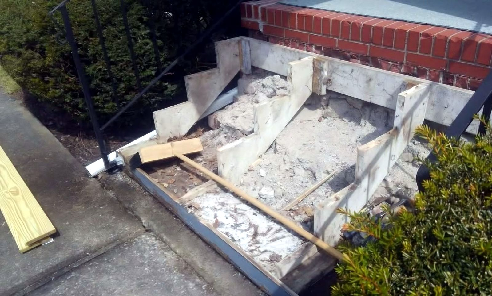
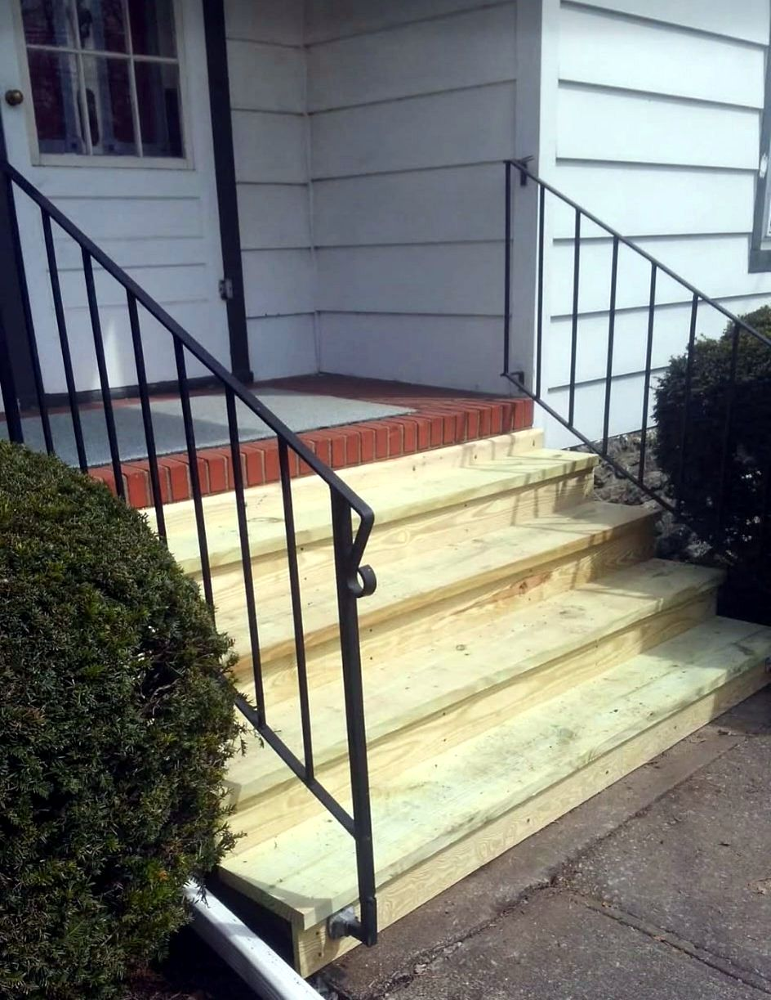
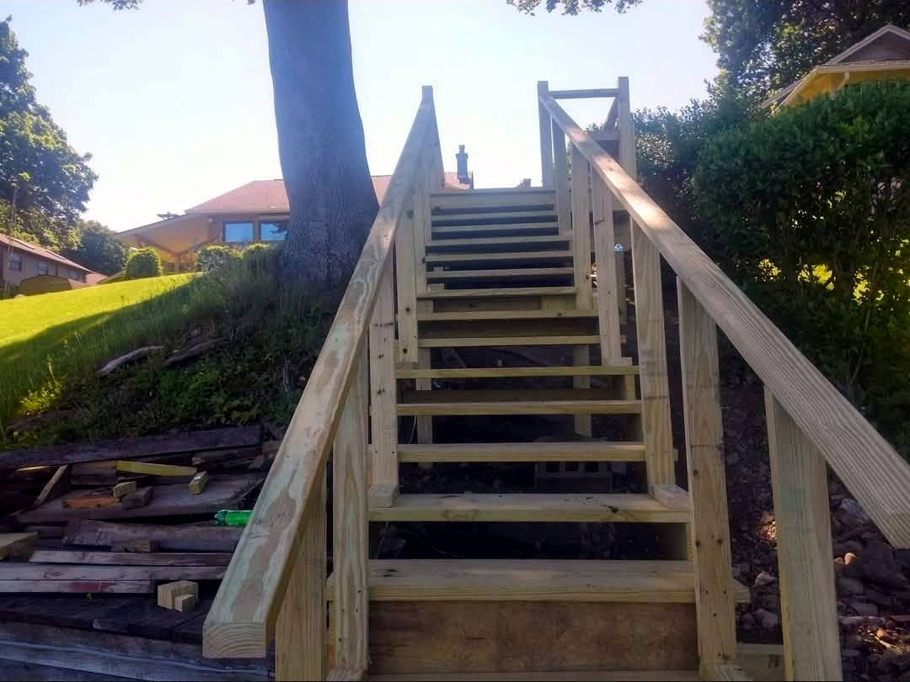
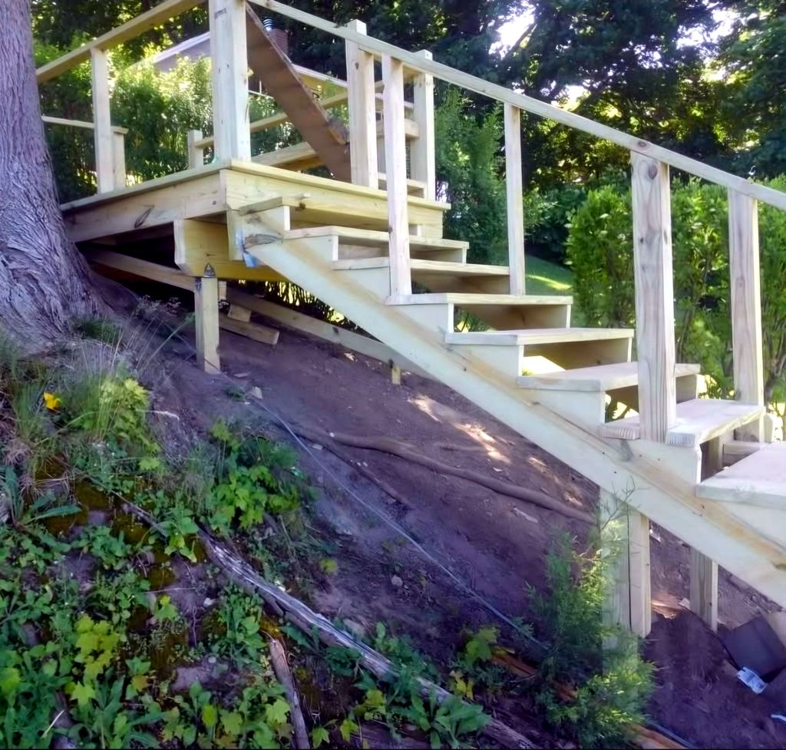
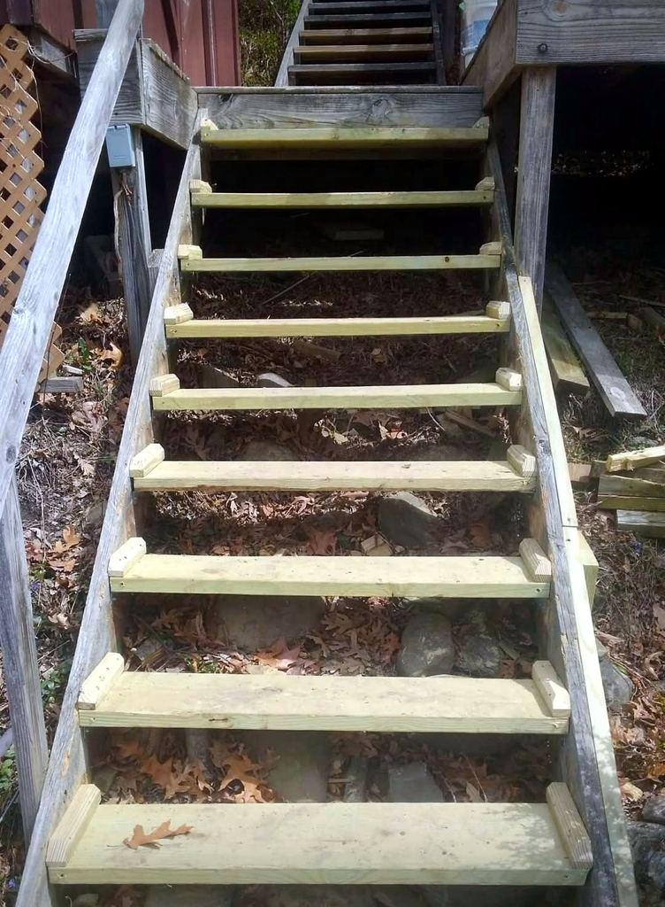
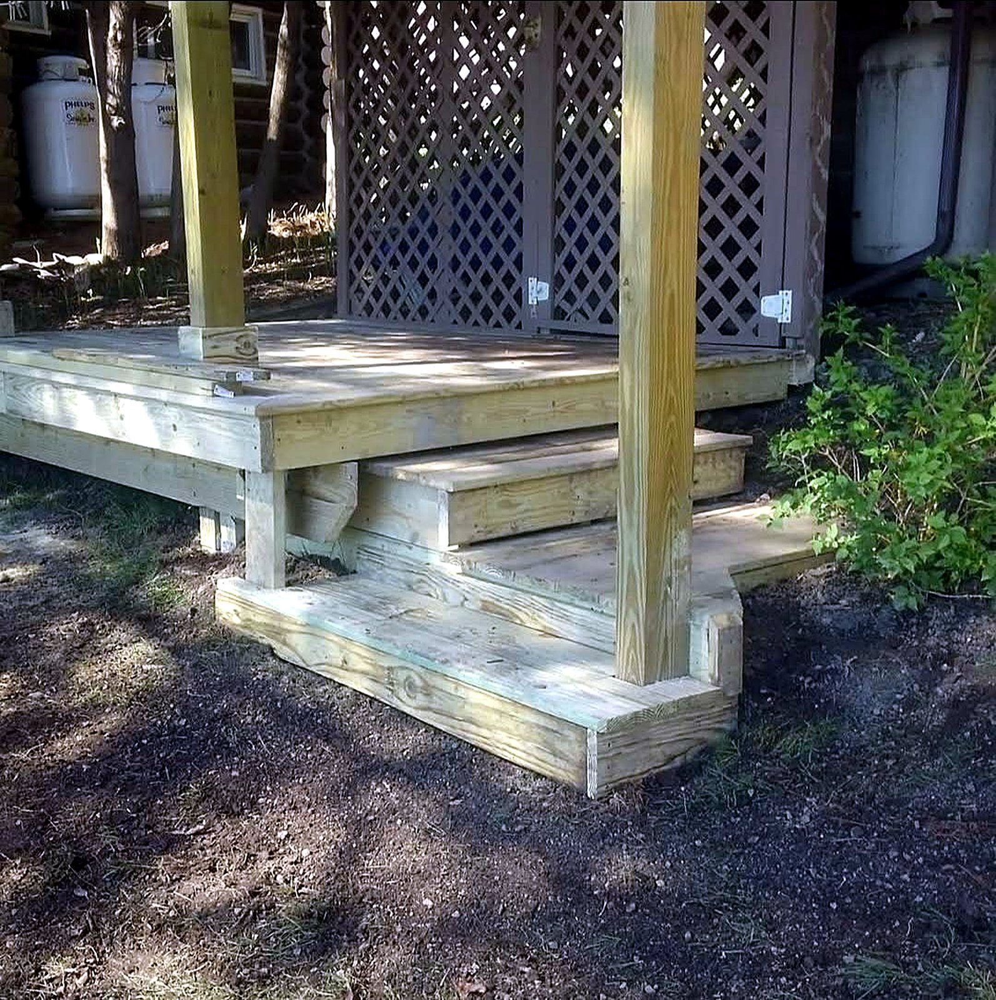
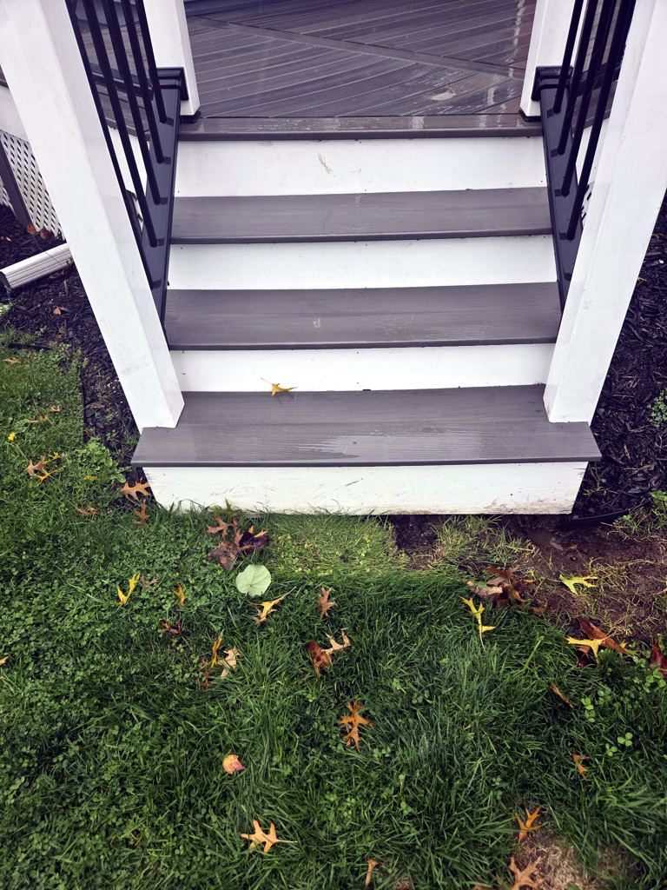
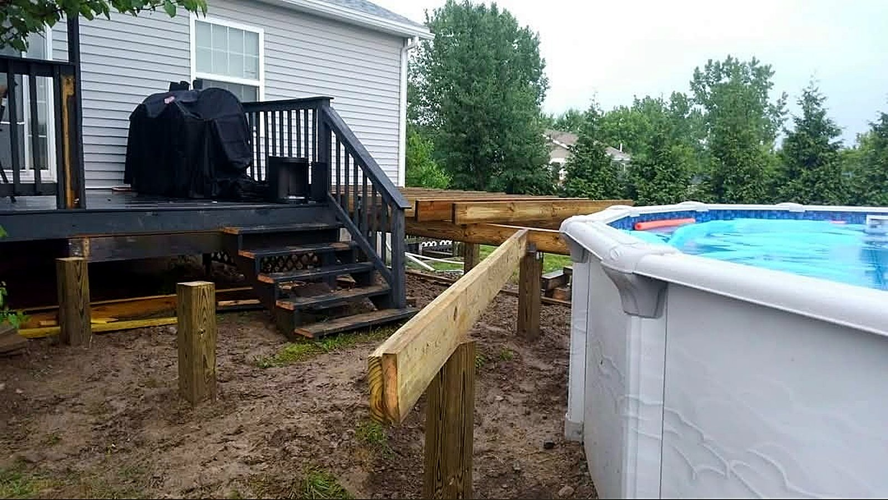
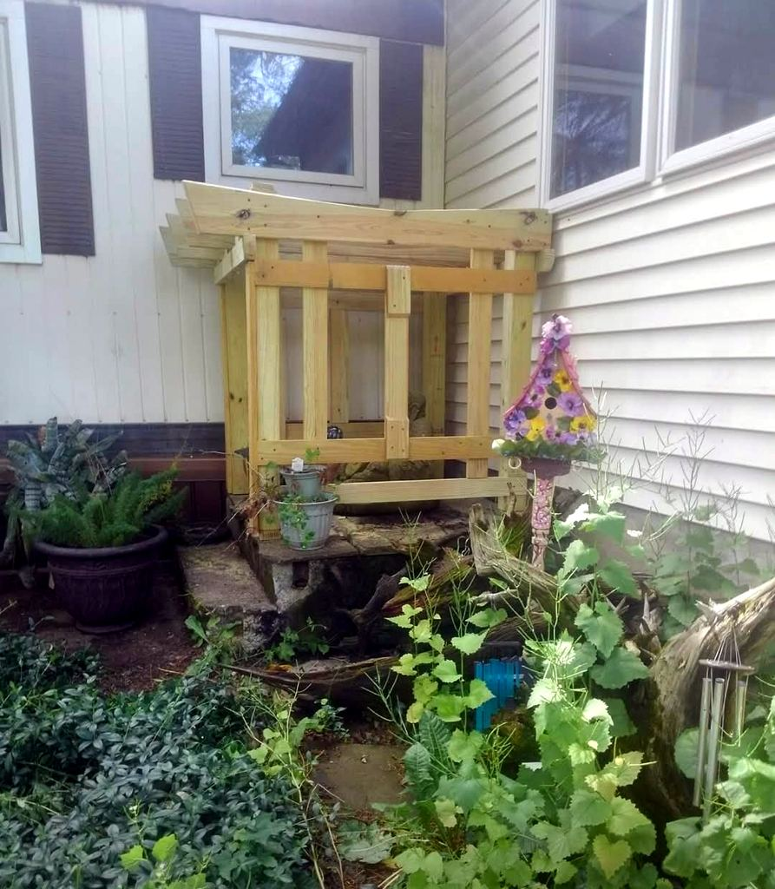

Services
Decks, Porches & Stairs
Builds and restorations — hillside and lake-access stairs, pool decks, porch rebuilds. Priced by free estimate, photographed before and after.
The proof pair
Same steps. Before, and after.


Rotted stringers and crumbled fill out; new pressure-treated treads in, iron railings kept. Porch and step restoration is some of the most-booked work in this company, and it's priced after the look — rot decides the job, and rot hides.
Hillside & lake stairs
Stairs where the land drops.

Lake properties and hillside lots need stairs that are structures, not ladders — landings, railings both sides, framing tied into the slope. The staircase above and the builds below are that work, in progress and finished.






Decks & porches
Framing first, finish second.
The framing is photographed before the boards go on — joists, hangers, posts — because that's the part that has to hold. Pool decks are a specialty: large framing grids built around the pool, finished with railings.




Start it.
Call, text a photo of the deck or the stairs, or use the form.